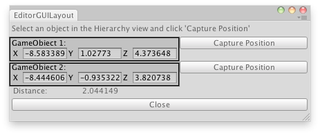

EditorGUILayout.Vector3Field
public static Vector3 Vector3Field(GUIContent label,
Vector3 value,
params GUILayoutOption[] options);
Parameters
| label | Label to display above the field. | |
| value | The value to edit. | |
| options | An optional list of layout options that specify extra layout
properties. Any values passed in here will override settings defined by the style.See Also: GUILayout.Width, GUILayout.Height, GUILayout.MinWidth, GUILayout.MaxWidth, GUILayout.MinHeight, GUILayout.MaxHeight, GUILayout.ExpandWidth, GUILayout.ExpandHeight. |
Returns
Vector3 The value entered by the user.
Description 描述
Make an X, Y & Z field for entering a Vector3.

Measure the distance between 2 GameObjects or 2 positions in 3D space.
using UnityEditor; using UnityEngine;
public class EditorGUILayoutVector3Field : UnityEditor.EditorWindow { float distance = 0f; Vector3 obj1; Vector3 obj2;
[MenuItem("Examples/Measure Distance between 2 objects")] static void Init() { EditorGUILayoutVector3Field window = (EditorGUILayoutVector3Field)EditorWindow.GetWindow(typeof(EditorGUILayoutVector3Field), true, "My Empty Window"); window.Show(); }
void OnGUI() { GUILayout.Label("Select an object in the Hierarchy view and click 'Capture Position'"); EditorGUILayout.BeginHorizontal(); obj1 = EditorGUILayout.Vector3Field("GameObject 1:", obj1); if (GUILayout.Button("Capture Position")) obj1 = Selection.activeTransform.position; EditorGUILayout.EndHorizontal();
EditorGUILayout.BeginHorizontal(); obj2 = EditorGUILayout.Vector3Field("GameObject 2:", obj2); if (GUILayout.Button("Capture Position")) obj2 = Selection.activeTransform.position; EditorGUILayout.EndHorizontal(); EditorGUILayout.LabelField("Distance:", distance.ToString()); if (GUILayout.Button("Close")) this.Close(); }
void OnInspectorUpdate() { distance = Vector3.Distance(obj1, obj2); this.Repaint(); } }